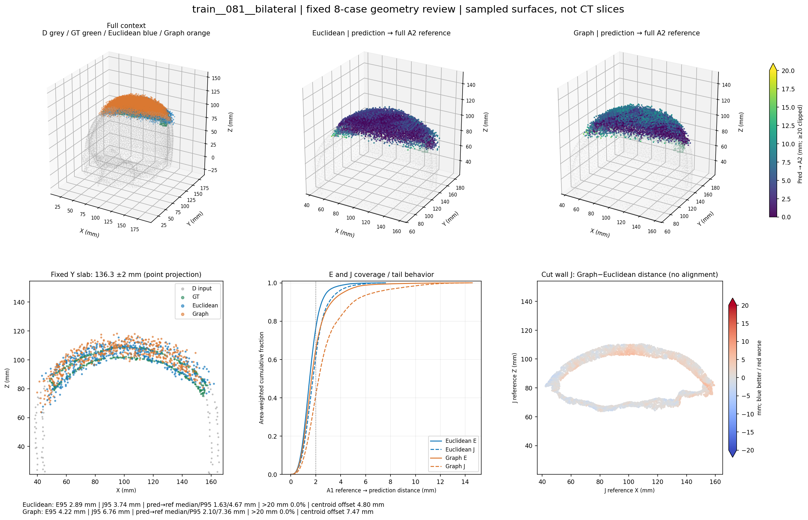
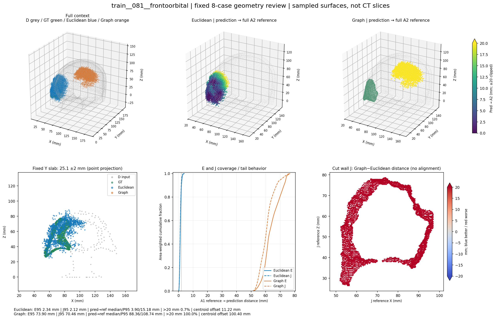
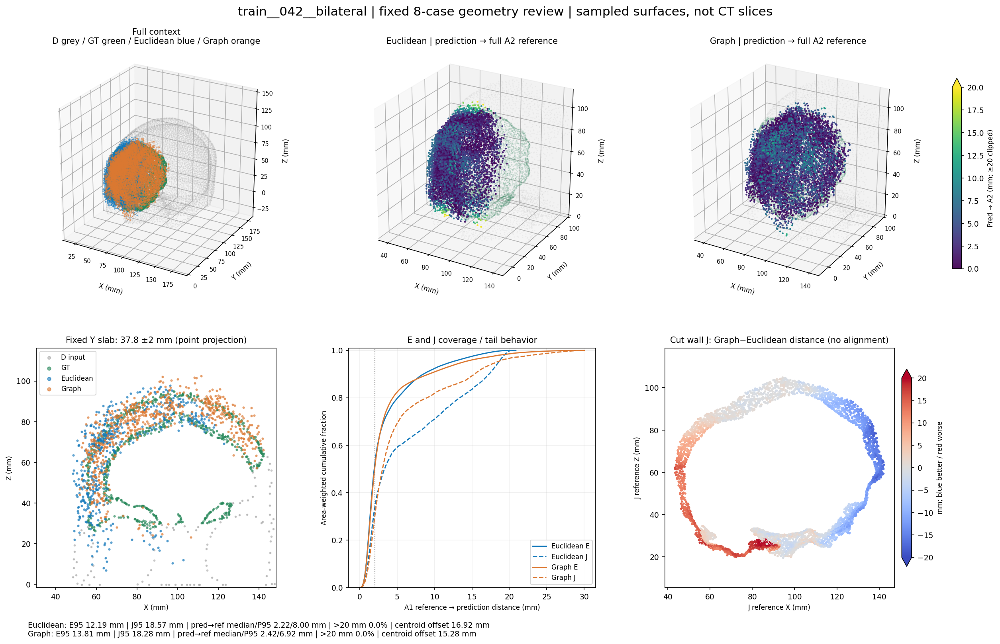
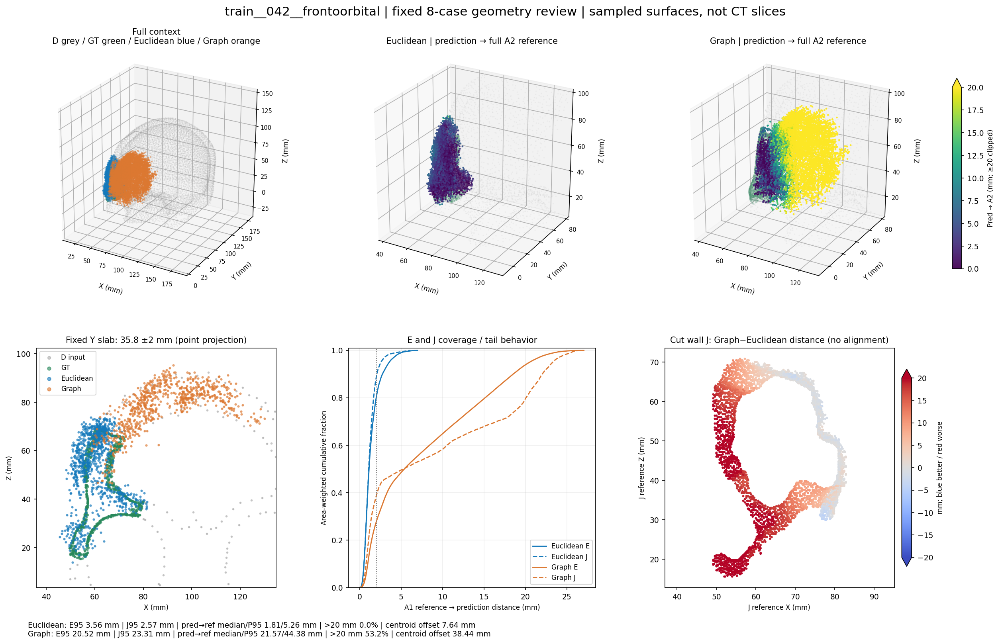
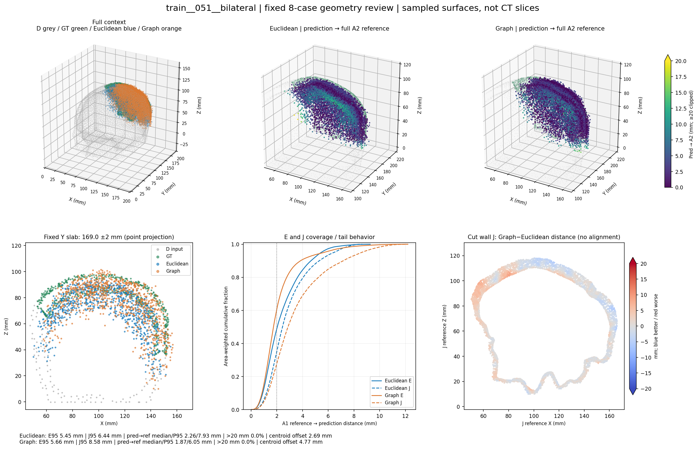
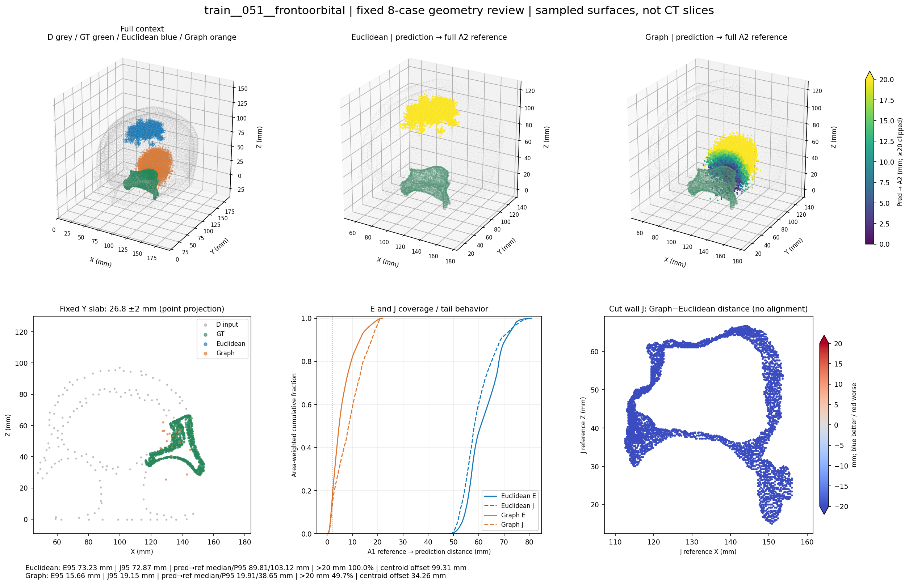
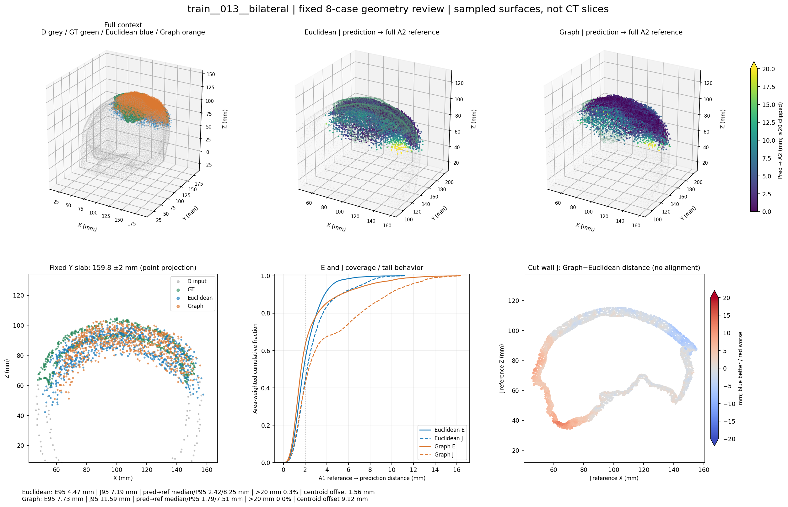
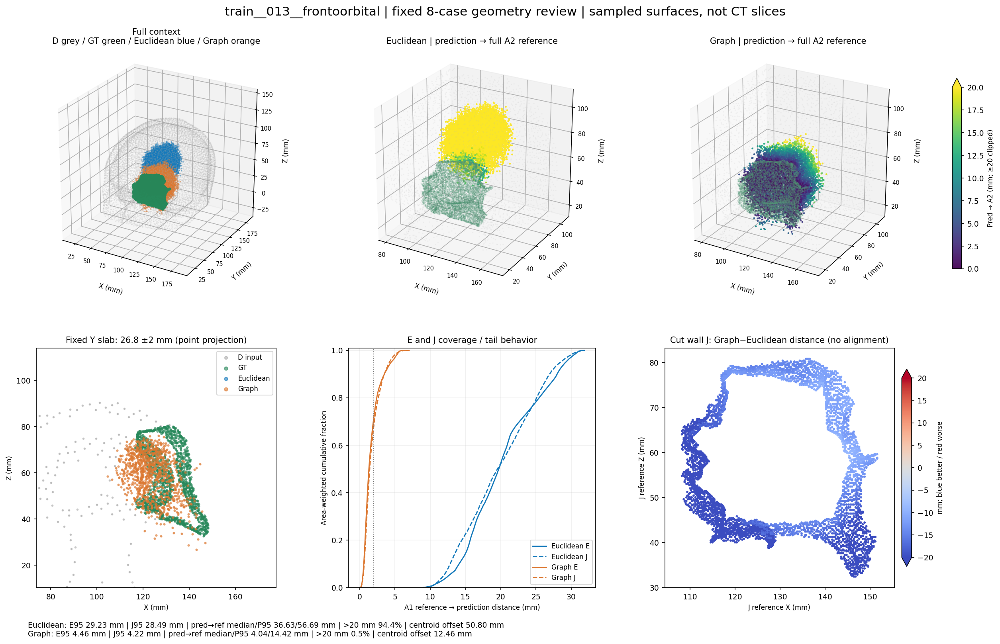

额眶病例存在完整骨片级位置／形态错误，两臂均可能发生；双侧还存在不完整覆盖及局部边缘差异。病例为事后固定解释样本，不估计总体错误率、不修改主结果。
中文报告 · 16行数值诊断CSV。点云剖面不是CT；不配准、保留全部预测点。交互图与plotly.min.js保留同目录可离线打开。
两臂主要位于目标颅盖范围，未见整块远离GT。图距离的E/J P95及反向P95均更差，J覆盖61.02%→41.17%，>20mm点均为0；主要是壳面分布与目标／切壁覆盖不足，不能归结为少数极远离群点。

图距离预测形成远离额眶GT的完整点簇，8192点全部距完整A2参考>20mm，中位数88.36mm、质心差100.40mm；GT所在固定薄层没有该臂预测点。属于整块位置／形态错误。欧氏覆盖GT较好，但仍有反向尾部误差，不能称高精度完整恢复。

两臂预测点大多靠近GT，但目标参考到预测的E/J P95仍高达12–19mm。薄层图可见部分GT轮廓未被覆盖；两臂切壁差值在不同位置方向相反。属于不完整形状／空间覆盖与局部边缘分布问题，不是整块远离GT，也不是只有几颗离群点。

图距离预测有明显大范围形状／位置偏差，53.17%点距参考>20mm、中位数21.57mm，J覆盖88.90%→38.78%。它仍有局部重叠，不能描述为全部点失配，也不能缩小为切壁微调问题；欧氏整体更接近目标。

两臂整体位于相近目标颅盖位置。图距离反向P95由7.93降至6.05mm，但J P95由6.44增至8.58mm、J覆盖34.87%→27.63%。预测点更贴近已有目标表面，同时目标切壁覆盖更差，是有向覆盖与反向尾部的权衡。

欧氏预测整块远离额眶GT，全部点>20mm、中位数89.81mm、质心差99.31mm。图距离相对大幅改善，但仍有49.66%点>20mm、反向P95 38.65mm、J覆盖仅13.01%；相对改善并不等于重建合格。

虽然来源013总体改善，本双侧病例图距离反而E/J P95更差，4.47→7.73mm、7.19→11.59mm。反向P95略好且>20mm比例很低，剖面和J差值提示形状分布／覆盖偏差；不能将来源级改善推广到该来源所有缺损。

欧氏存在明显大范围位置／形态偏差，94.40%点>20mm，中位数36.63mm。图距离大幅改善到0.55%点>20mm，E/J P95为4.46／4.22mm；仍有反向P95 14.42mm及局部形状／边界余差，不认证内外板或临床接口准确。
